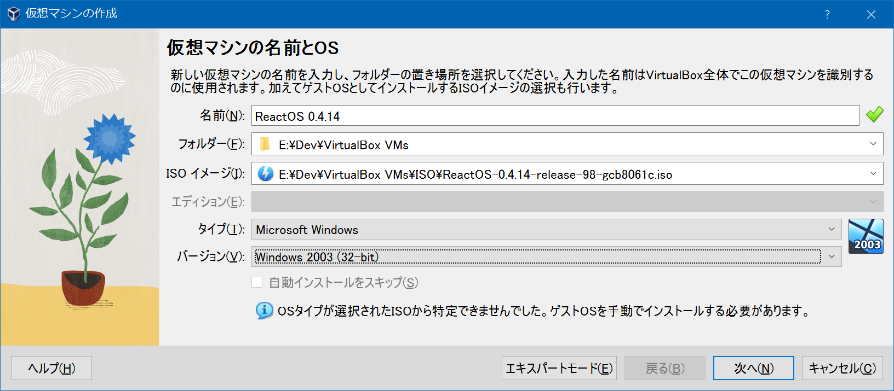
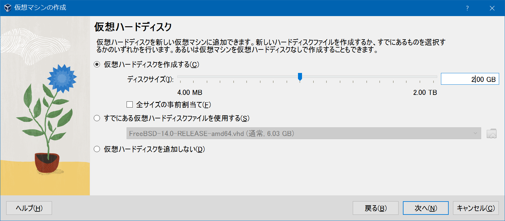
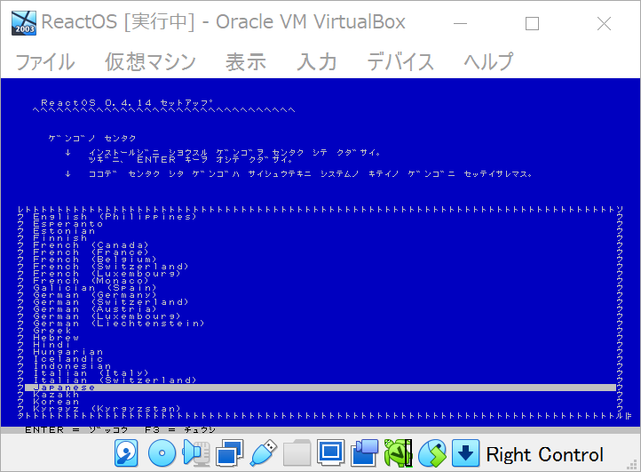
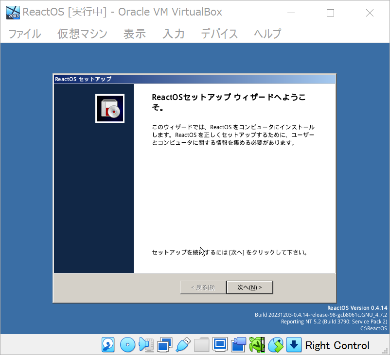
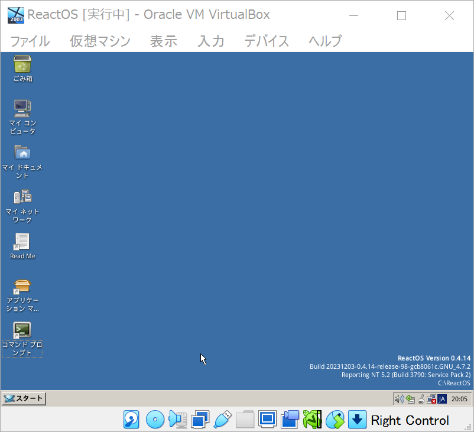

VirtualBox で ReactOS 環境を作ってみる
Windows 互換を目指す ReactOS というモノがある。存在は知っていたが触ったことがなかったので、今回 VirtualBox で環境構築してみた。
- 参考 : VirtualBox - ReactOS Wiki
- 英語だが公式サイトに VirtualBox での環境構築手順が記載されている
- 参考 : VirtualBoxにReactOSをインストールして利用する | mebee
まずは ReactOS の公式 ISO イメージをダウンロードする。
- Download | ReactOS Project
https://downloads.sourceforge.net/reactos/ReactOS-0.4.14-release-98-gcb8061c-iso.zipReactOS-0.4.14-release-98-gcb8061c.isoを解凍して取得しておく
VirtualBox より新規仮想マシンを作成していく。
-

- ISO イメージ : 先ほど解凍した ISO ファイルを指定する
- タイプ : Microsoft Windows
- バージョン : Windows 2003 (32-bit)
-

- 仮想ハードディスクを作っておく必要がある
仮想マシンを起動すると、初回は青い TUI 画面が開く。日本語設定ができるので、日本語に設定してドライブのフォーマットなどを行っていく。
- 
ドライブのフォーマット後、マシンが再起動したら「Press any key…」と表示されるが、ココは何も押さずに放置する。すると GUI のセットアップウィザードが開く。
- 
画面どおりに進めていき再起動すれば、デスクトップが無事開く。
- 
デスクトップのアイコンは Xfce で見たことのあるような、Linux 風なアイコンなのだが、「ターミナル」ではなく「コマンドプロンプト」となっているように、ls コマンドではなく dir コマンドが効くようになっていて、かなり Windows 風味。どうやって作られてるんだろう？
Linux の Wine プロジェクトと協力して、Windows 向けのソフトが動く環境になっているようなので、色々遊んでみるとしよう。